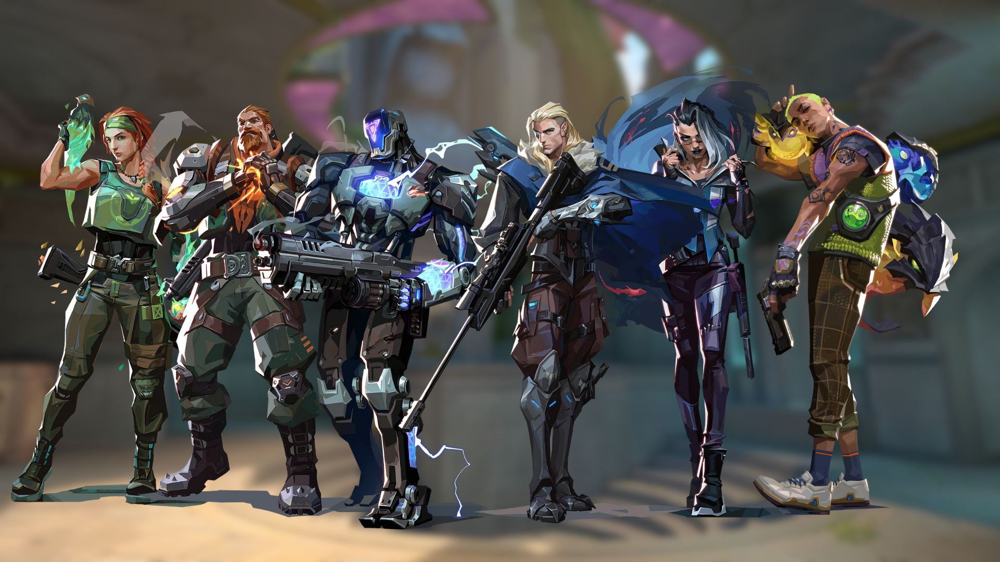

INICIADORES
Los iniciadores en Valorant son agentes diseñados para romper las defensas enemigas, obtener información clave y preparar el terreno para que su equipo tome sitios. Usan habilidades de escaneo, destellos (flashes) y aturdimiento para limpiar ángulos, forzar a los enemigos a salir de sus escondites y facilitar las entradas.
Sova: Especialista en revelar posiciones mediante flechas y drones.
Fade: Aterroriza y rastrea enemigos con sus habilidades de pesadilla.
Breach: Experto en aturdir y cegar a través de paredes.
Skye: Proporciona curación, flashes y exploración con sus espíritus animales.
KAY/O: Inhibe las habilidades enemigas (supresión) y usa flashes.
Gekko: Utiliza a sus criaturas para aturdir, cegar y plantar/desactivar la spike.
Tejo (nuevo): Controlador/Iniciador con habilidades para explorar y controlar zonas.
